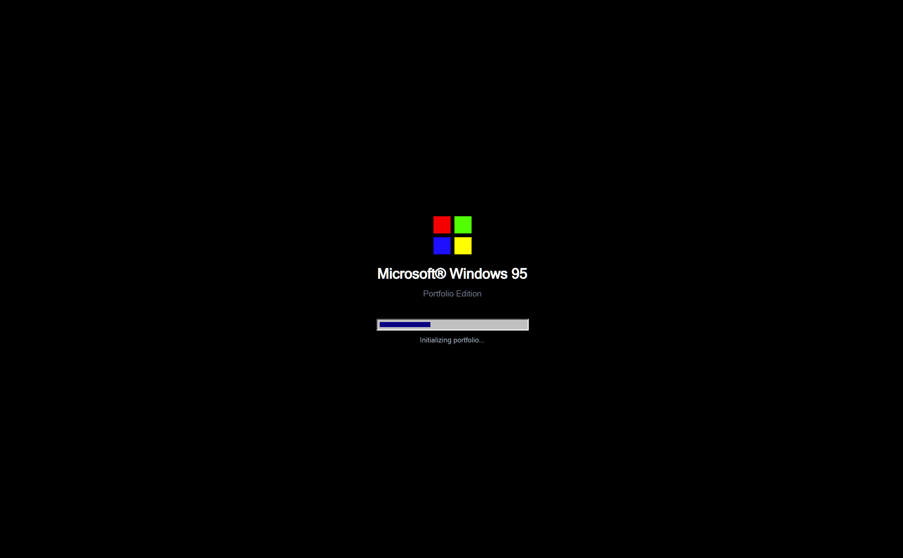
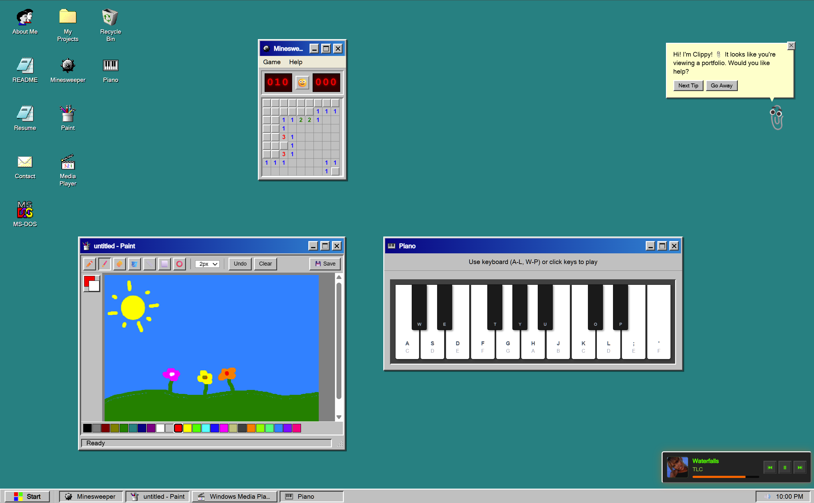
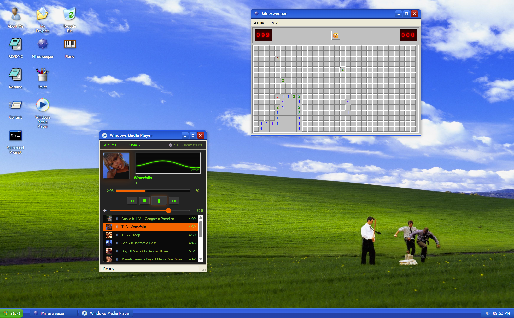
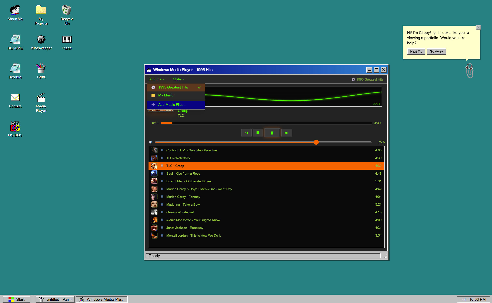

Nobody remembers another portfolio grid. So I built a working Windows 95 desktop instead.

A grid of case studies proves you can design a case study page. It doesn't prove you can build an interface people actually want to touch.
So instead of another scroll of project cards, I built a working desktop: draggable windows, a Start menu, a taskbar, and a toolbar switch that swaps the whole thing between a Windows 95 skin and a Windows XP skin. Every icon opens something real, not a screenshot pretending to be one.
Three pieces of that below.
Windows that behave like actual windows.
Every window drags from its title bar, resizes from any corner, and snaps to the screen edges and to each other, the way a real window manager behaves.
None of that is a static screenshot of an OS sitting behind some modals. It's the actual window manager, built to run in a browser.

The Start menu is thirty years old and it still works. That's not nostalgia. That's just good design.
Don't like Windows 95? Fine, use XP.
One toggle in the toolbar swaps the entire desktop, chrome, icons, Start menu, wallpaper, all of it, from the Windows 95 skin to Windows XP's rolling-hills look. Nothing reloads. The same Minesweeper window and the same Media Player just get redrawn a few years later.
I built two OS eras instead of one because a single skin is a costume. Two skins, swappable on demand, is a system.

A Winamp clone that streams actual audio.
The media player isn't a mockup with a fake playlist. It streams real audio through a backend route, loaded with an actual 90s playlist: Coolio, TLC, Mariah Carey, Oasis. There's a real Albums menu too, not just one long queue, so switching playlists works the way it actually did back then.
Four skins ship with it, Classic, Winamp, Silver, and a synthwave reskin nobody asked for but everybody gets.
